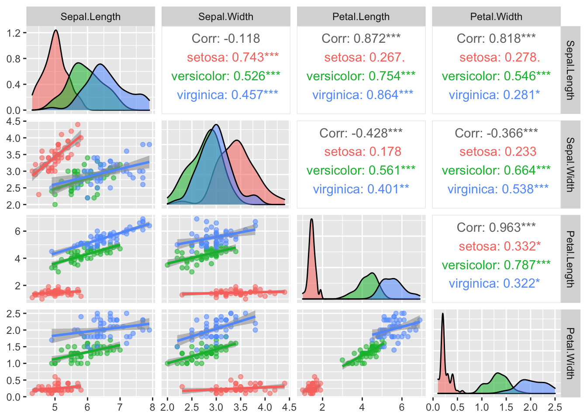

We start by loading in all the R packages we need for this report (R Core Team 2020).
library(dplyr) # tools for data wangling
library(magrittr) # operators that improve data manipulation workflow
library(tidyr) # tools for manipulating data
library(ggplot2) # for plotting
library(randomcoloR) # produces colour palettes for plots
library(forcats) # for manipulating factor variablesWe start by reading in the iris data in the
datasets package.
library(datasets)
iris_data = datasets::irisObserving the imported data frame, we can see that the the
iris dataset contains the following qualitative and
quantitative variables:
Qualitative:
Quantitative:
The dataset contains, for each flower examined, measurements of the four anatomical features above, each of which is a continuous numerical variable.
iris_summary = summary(iris_data)
iris_summary
#> Sepal.Length Sepal.Width Petal.Length Petal.Width
#> Min. :4.300 Min. :2.000 Min. :1.000 Min. :0.100
#> 1st Qu.:5.100 1st Qu.:2.800 1st Qu.:1.600 1st Qu.:0.300
#> Median :5.800 Median :3.000 Median :4.350 Median :1.300
#> Mean :5.843 Mean :3.057 Mean :3.758 Mean :1.199
#> 3rd Qu.:6.400 3rd Qu.:3.300 3rd Qu.:5.100 3rd Qu.:1.800
#> Max. :7.900 Max. :4.400 Max. :6.900 Max. :2.500
#> Species
#> setosa :50
#> versicolor:50
#> virginica :50
#>
#>
#> From the above summary, we make the following observations:
petal length,
with a range of 5.9 cm; petal width and
sepal width share the smallest range, of 2.4 cm.sepal length and width, the
median is lower than the mean, and for both petal length
and width, the median is higher than the mean. This could
suggest that the sepal measurements are positively skewed, whereas the
petal measurements are negatively skewed.sepal length has the highest mean and median of all the
measurements, whereas petal width has the lowest.The task of identifying the Iris species of an unknown plant specimen based on these anatomical measurements is a classification problem. Since we already know the potential species of Iris and we have a dataset containing observations that we could train a classifier on, this is a problem we could approach using supervised statistical learning methods.
# we prune categorical variables (`species`) before passing dataset to `cor`
iris_data_nocat <- dplyr::select(iris_data, -Species)
iris_data_pwcorrs = cor(iris_data_nocat)
iris_data_pwcorrs
#> Sepal.Length Sepal.Width Petal.Length Petal.Width
#> Sepal.Length 1.0000000 -0.1175698 0.8717538 0.8179411
#> Sepal.Width -0.1175698 1.0000000 -0.4284401 -0.3661259
#> Petal.Length 0.8717538 -0.4284401 1.0000000 0.9628654
#> Petal.Width 0.8179411 -0.3661259 0.9628654 1.0000000From the above correlation matrix, we can observe that
petal length & width appear to be very
highly correlated (0.9628654). Petal length &
sepal length (0.8717538) and petal width &
sepal length (0.8179411) also have high correlations. On
the other hand, sepal width & sepal length
appear to have no correlation (-0.1175698), whereas
petal length & sepal width (-0.4284401)
and petal width & sepal width (-0.3661259)
appear to be moderately negatively correlated. Further statistical
analysis needs to be conducted before we can make inferences about the
significance of these observations.
We use the GGally package for the plot below (Schloerke, Crowley, and Cook 2018).
# plot correlation matrix of scatterplots, filtered by species
GGally::ggpairs(iris_data, columns = 1:4, aes(colour = Species, alpha = 0.5),
lower = list(continuous = "smooth"),
)
The above is a correlation matrix which shows the relationships
(pairwise Pearson correlations) among the measurements in the
iris dataset. Only ‘off-diagonal’ pairwise correlations are
shown – i.e., only correlations between different measurements (e.g.,
petal length and width), as opposed to between the same measurements
(e.g., petal length and itself), which are trivial, and always equal to
1. The plots are all filtered into 3 groups, corresponding to the 3
species of Iris (blue = setosa, green = versicolor, blue = virginica).
The numerical correlation values given on the upper triangle of the
matrix give the precise Pearson correlations for each species. The grey
values are the average correlations for a given pairwise comparison,
irrespective of species.
The length and width measurements serve as our predictor variables. The scatter plots on the lower triangle of the matrix roughly show the relationship between these measurements, and the histograms show their individual distributions. As we observed in (1.4), the highest pairwise correlation is between petal length and width, which can be seen in the scatterplot for the corresponding comparison, in which the values all appear to be roughly clustered along the positive diagonal, indicating a strong positive correlation. The corresponding numerical correlation values corroborate this observation, as they all have asterisks beside them, indicating statistical significance. However, with the scatterplots stratified according to species, we can see that this high average correlation seems to be due, at least in part, to the way the observations for the individual species are clustered. The setosa observations are clustered in the bottom left corner, the versicolor observations in the middle, and the virginica observations in the top right, giving rise to an artificially high average correlation.
The code below identifies the proportion of each species in the
iris dataset.
library(dplyr)
library(magrittr)
iris %>%
dplyr::group_by(Species) %>%
summarise(n = n()) %>%
mutate(prop = n/sum(n))
#> # A tibble: 3 × 3
#> Species n prop
#> <fct> <int> <dbl>
#> 1 setosa 50 0.333
#> 2 versicolor 50 0.333
#> 3 virginica 50 0.333The code below partitions the dataset into training and validation sets, each with 1/3 of the observations representing each species.
library(caret)
train_ind <- createDataPartition(iris$Species, p = 0.5, list = FALSE)
# proportion of species types in training set
table(iris$Species[train_ind])/sum(table(iris$Species[train_ind]))
#>
#> setosa versicolor virginica
#> 0.3333333 0.3333333 0.3333333
# proportion of species types in validation set
table(iris$Species[-train_ind])/sum(table(iris$Species[-train_ind]))
#>
#> setosa versicolor virginica
#> 0.3333333 0.3333333 0.3333333
# train and validation set split
train_iris <- slice(iris, train_ind)
validation_iris <- slice(iris, -train_ind)
# knn needs response in train set
train_iris_species <- pull(train_iris, Species)
# To compute misclassification error, we need response in validation set
validation_iris_species <- pull(validation_iris, Species)
# knn needs predictors in train and validation set
train_predictors <- dplyr::select(train_iris, -Species)
validation_predictors <- dplyr::select(validation_iris, -Species)The code below uses the K-nearest neighbours method to predict the Iris species of the observations in the validation set, based on those in the training set, which are used to create the model. A confusion matrix showing the performance of the model is outputted.
library(class)
set.seed(10) # to ensure reproducibility of the results
# Use KNN to predict the labels for validation set.
fit_knn <- knn(
scale(train_predictors),
scale(validation_predictors),
cl = train_iris_species,
k = 3,
prob = TRUE)
# produce confusion matrix
tab <- table(validation_iris_species, fit_knn)
tab
#> fit_knn
#> validation_iris_species setosa versicolor virginica
#> setosa 24 1 0
#> versicolor 0 23 2
#> virginica 0 3 22
sum(tab)
#> [1] 75From the above confusion matrix we observe that all 25 setosa specimens are classified correctly, 2 versicolor specimens are misclassified as virginica, and 1 virginica specimen is misclassified as a versicolor. The overall proportion of correct predictions is \(\frac{25 + 24 + 23}{75} = .96\), i.e., 96%.
The test set error rate is the proportion of misclassified specimens in the validation set, i.e., \(3/75\) = 4%.
In the below code, we repeat the above analysis but instead of a 50%/50% training/validation split, we use a 70%/30% split. The resulting split has 45 observations in the validation set. The adjusted confusion matrix is outputted below.
library(caret)
# use p = .7 (70%) of the data for training
train_ind <- createDataPartition(iris$Species, p = 0.7, list = FALSE)
# proportion of species types in training set
table(iris$Species[train_ind])/sum(table(iris$Species[train_ind]))
#>
#> setosa versicolor virginica
#> 0.3333333 0.3333333 0.3333333
# proportion of species types in validation set
table(iris$Species[-train_ind])/sum(table(iris$Species[-train_ind]))
#>
#> setosa versicolor virginica
#> 0.3333333 0.3333333 0.3333333
# train and validation set split
train_iris <- slice(iris, train_ind)
validation_iris <- slice(iris, -train_ind)
# knn needs response in train set
train_iris_species <- pull(train_iris, Species)
# To compute misclassification error, we need response in validation set
validation_iris_species <- pull(validation_iris, Species)
# knn needs predictors in train and validation set
train_predictors <- dplyr::select(train_iris, -Species)
validation_predictors <- dplyr::select(validation_iris, -Species)library(class)
set.seed(10) # to ensure reproducibility of the results
# Use KNN to predict the labels for validation set.
fit_knn <- knn(
scale(train_predictors),
scale(validation_predictors),
cl = train_iris_species,
k = 3,
prob = TRUE)
# produce confusion matrix
tab <- table(validation_iris_species, fit_knn)
tab
#> fit_knn
#> validation_iris_species setosa versicolor virginica
#> setosa 14 1 0
#> versicolor 0 14 1
#> virginica 0 1 14
sum(tab)
#> [1] 45From the above confusion matrix, we can estimate the adjusted test set error rate as the proportion of misclassified specimens, i.e., \(\frac{1 + 2}{45} = .066\), i.e., 6.67%.
We start by reading in the bankruptcy dataset from the
MixGHD package.
library(MixGHD)
data(bankruptcy)
summary(bankruptcy)
#> Y RE EBIT
#> Min. :0.0 Min. :-308.90 Min. :-280.000
#> 1st Qu.:0.0 1st Qu.: -39.05 1st Qu.: -17.675
#> Median :0.5 Median : 7.85 Median : 4.100
#> Mean :0.5 Mean : -13.63 Mean : -8.226
#> 3rd Qu.:1.0 3rd Qu.: 35.75 3rd Qu.: 14.400
#> Max. :1.0 Max. : 68.60 Max. : 34.100The bankruptcy dataset contains data for American firms,
half of which had filed for bankruptcy at the time the data was
collected, measuring their financial status. From this summary we
determine the predictor and response variables in the dataset:
Predictor:
RE: ratio of retained earnings to total assetsEBIT: ratio of earnings before interest and taxes to
total assetsResponse:
Y: binary value (1 or 0) representing whether the firm
is financially sound or not, respectivelyBelow we convert the response variable Y to a
factor:
# convert response variable to factor
bankruptcy_data = dplyr::mutate(
.data = bankruptcy, Y = factor(Y))
class(bankruptcy_data$Y)
#> [1] "factor"prop_brupt = sum(bankruptcy$Y == 0)/dim(bankruptcy)[1]
prop_sound = sum(bankruptcy$Y == 1)/dim(bankruptcy)[1]
prop_brupt
#> [1] 0.5
prop_sound
#> [1] 0.5The dataset is split down the middle, with 50% of observations in the
bankruptcy class, and 50% in the
financially sound class.
The code below constructs a classification tree on the
bankruptcy dataset using a 60%/40% training/validation set
split.
set.seed(1)
library(MixGHD)
data(bankruptcy, package="MixGHD")
# Sample 60% of observations so that the training set has
# the same proportion of each class of Y as in the original data.
library(caret)
library(tree)
# training set indices
bankruptcy_train_index <- createDataPartition(bankruptcy$Y, p = 0.6, list = FALSE)
# Build a tree
bank_tree <- tree(
Y ~ .,
data = bankruptcy,
subset = bankruptcy_train_index,
method="class"
)
summary(bank_tree)From the summary above, we observe that the only predictor variable
used in the construction of the tree is RE. The resulting
tree has 4 terminal nodes.
Below we estimate the test error using the validation set.
# store data frame consisting of test set
bank_test_set = bankruptcy[-bankruptcy_train_index, ]
# test set correct labels
bank_test_set_Y = bankruptcy$Y[-bankruptcy_train_index]
# predict class of test observations based on constructed tree
bank_pred <- predict(
bank_tree,
bank_test_set
)
head(bank_pred)
table(bank_pred, bank_test_set_Y)
# test error prediction
(table(bank_pred, bank_test_set_Y)[1,1] + table(bank_pred, bank_test_set_Y)[2,2])/sum(table(bank_pred, bank_test_set_Y))The model’s test error on the validation set is 0.4615385.